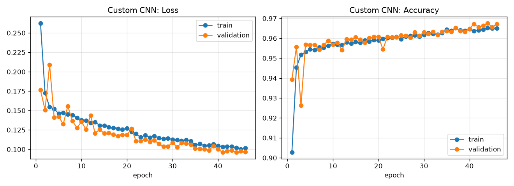
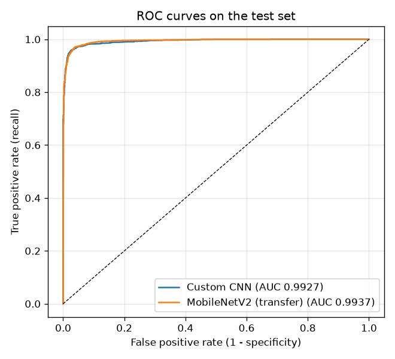
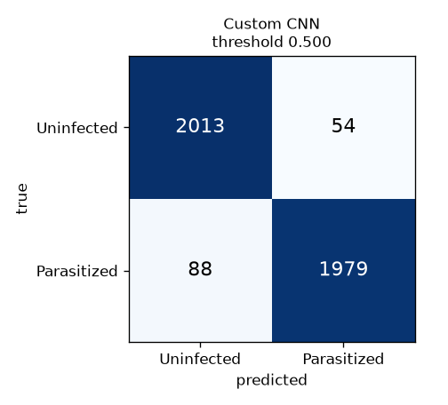
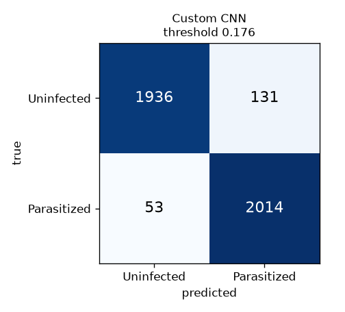
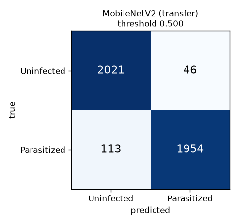
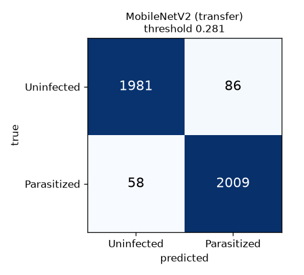

1. Live Malaria Cell Classifier & Grad-CAM
Runs your exact trained 4-block MalariaCNN (249,153 fused parameters) directly in the browser. Upload any blood smear cell image or click a sample from the held-out test set to inspect its prediction and live Grad-CAM heatmap.
outputs/splits/test.csv):
2. Interactive Decision Threshold Explorer
In malaria screening, a missed infection (False Negative) is far more dangerous than a false alarm (which simply triggers a human microscopist re-check). Drag the threshold slider below to recompute the exact confusion matrix and clinical metrics across all 4,134 test images in real time.
2,067 cells
2,067 cells
3. Model Benchmark & Statistical Comparison
Evaluated once on the held-out test split (4,134 images). Decision thresholds were tuned exclusively on the validation split (4,134 images) to prevent test-set leakage.
| Model | Threshold | Accuracy | Precision | Recall (Sensitivity) | Specificity | F1 Score | ROC-AUC | Missed (FN) | False Alarms (FP) |
|---|---|---|---|---|---|---|---|---|---|
| Custom CNN (Headline) | 0.500 (default) | 96.57% | 97.34% | 95.74% | 97.39% | 0.9654 | 0.9927 | 88 | 54 |
| Custom CNN (Headline) | 0.176 (tuned) | 95.55% | 93.89% | 97.44% | 93.66% | 0.9563 | 0.9927 | 53 | 131 |
| MobileNetV2 (transfer) | 0.500 (default) | 96.15% | 97.70% | 94.53% | 97.77% | 0.9609 | 0.9937 | 113 | 46 |
| MobileNetV2 (transfer) | 0.281 (tuned) | 96.52% | 95.89% | 97.19% | 95.84% | 0.9654 | 0.9937 | 58 | 86 |
| Model | Parameters | Train Time | Epochs Run | Batch-1 (GPU) | Batch-64 (GPU) | End-to-End* |
|---|---|---|---|---|---|---|
| Custom CNN | 0.25 M | 7.1 min | Early stop ep 46/50 (best 44) | 0.74 ms | 0.072 ms | 1.44 ms |
| MobileNetV2 | 2.23 M | 3.8 min | Frozen 5/5; FT ep 18/20 (best 13) | 5.00 ms | 0.111 ms | 4.72 ms |
*End-to-end latency includes reading the PNG from disk, resizing to 128×128, and running single-image inference (predict.py path).
| Metric | Threshold | Difference | 95% Confidence Interval | Statistical Verdict |
|---|---|---|---|---|
| ROC-AUC | — | +0.0010 | -0.0003 to +0.0025 | Within Noise |
| Accuracy | 0.50 | -0.4112 pts | -0.8466 to +0.0490 pts | Within Noise |
| F1 Score | 0.50 | -0.0045 | -0.0089 to +0.0003 | Within Noise |
| Accuracy | Tuned | +0.9676 pts | +0.4112 to +1.5481 pts | MobileNetV2 Better |
| F1 Score | Tuned | +0.0091 | +0.0037 to +0.0148 | MobileNetV2 Better |
4. Training Curves, ROC & Confusion Matrices







5. Architecture, Explainability & Clinical Limitations
Custom CNN Architecture (0.25M Params)
Designed specifically for 128×128 segmented red blood cell patches:
Input: 3 × 128 × 128 RGB scaled to [0, 1] ↓ Block 1: Conv2d(3→32, 3×3) → BatchNorm → ReLU → MaxPool(2×2) [64×64] ↓ Block 2: Conv2d(32→64, 3×3) → BatchNorm → ReLU → MaxPool(2×2) [32×32] ↓ Block 3: Conv2d(64→128, 3×3) → BatchNorm → ReLU → MaxPool(2×2) [16×16] ↓ Block 4: Conv2d(128→128, 3×3) → BatchNorm → ReLU → MaxPool(2×2) [8×8] ↓ Head: AdaptiveAvgPool2d(1) → Dropout(0.5) → Linear(128→64) → ReLU → Linear(64→1)
- Mixed Precision: Trained with FP16
torch.autocast+BCEWithLogitsLossand Adam (lr=1e-3). - Data Augmentation: Random horizontal/vertical flips, full 360° rotation, ±10% zoom, and ±10% brightness jitter on the training split only.
Grad-CAM Findings & Clinical Limitations
- Sharp Parasite Localization: On true positives, the Custom CNN's Block-4 (16×16) Grad-CAM heatmap forms a tight focal hot-spot directly over the dark-purple Giemsa-stained chromatin dot/ring inside the cell, ignoring the black background.
- False Alarm Mechanism: False positives typically occur when segmentation artifacts or extracellular purple debris lie along the cell membrane border.
- Dataset Label Noise: Inspection of the highest-confidence "errors" reveals several cells labeled Uninfected in the NIH dataset that visibly contain stained rings, and vice versa.
- No Patient-Level Split: The Kaggle NIH release lacks patient/slide IDs, meaning cells from the same patient smear can appear across splits. External clinical deployment requires slide-level cross-validation.
- Screening Aid Only: Even at the recall-tuned threshold (97.44% sensitivity), ~2.5% of infected cells are missed; positive or borderline slides must be confirmed by a microscopist.